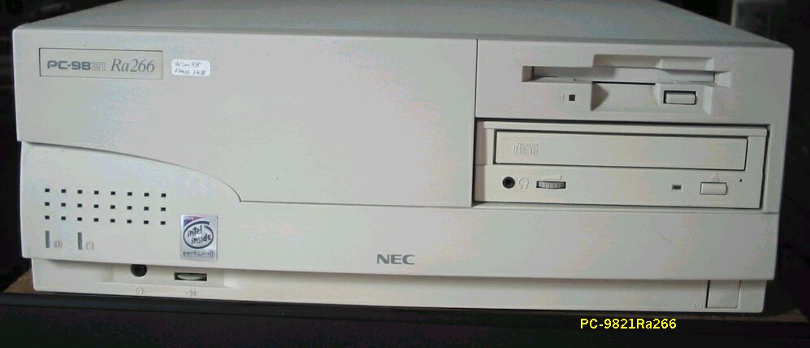
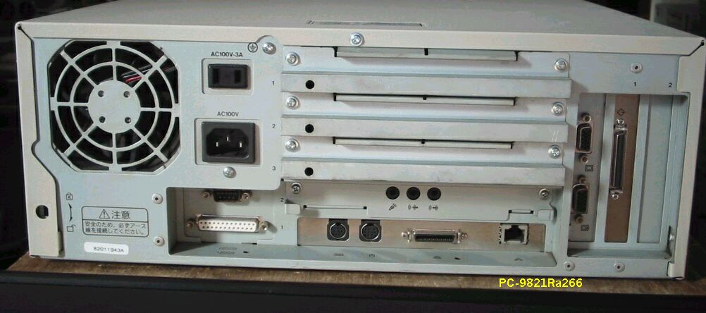

PC-9821 Ra266


比較的新しいPC98を入手しました。Ra266で、PentiumIIのPC98は初めてです。
入手したときの 状態は次のようになっていました。
・RAM 0MB； SIMMスロットにパリティー付き32MB２枚をさし、64MBに増設
・HD 3GB；
・CD-ROM；
・ビデオボードPCI-1； 抜かないでくださいとのこと
・オンボードLAN、USB
・PCI-2 無し ； SCSI
とりあえず使い道がないので、これ以上手を加えずに、コレクションの１台として保存する ことにしました。
ほとんど同時に、３台のJUNKなRa266を手に入れたのですが、このうち２台はSIMMスロットが不良で、２枚しかSIMM
させない状態でした。SIMMを固定する爪が、この機種では金属ではなく、プラスチック製で、そのうちの１つが
折れていて、SIMMがぐらぐらしてちゃんと接触しません。適当なプラスチックの棒を差し込んで、取りあえず固定する
ことはできました。 古いMACのIICxあたりでも、似たような経験があります。
(2003/12/22 記)
PC9821のページに戻る